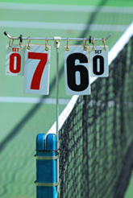
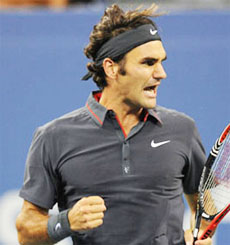

Previous: Conversations with Dr. Fox: An Advanced Degree in Tennis Theory | 🏠 Mental Game Home | Next: Defense Mechanisms
Crushing the Breaker
Comprehensive unified tennis knowledge base — Fundamentals, Stroke Analysis, Reference Library, and more
Crushing the Breaker
John Sherwood

What does it really take to win tiebreakers?
In tennis tiebreakers frequently decide sets. And now even on the tour, super tie breakers can decide matches.
Obviously playing tiebreakers effectively has a huge impact on your long term competitive results. But many competitors look like different players when playing breakers.
They fear them and they and don't understand the dynamics that make them different from regular games. So, let's clarify all that and outline some simple, highly effective tactics to help you win the highest possible percentage of the tie breakers you play.
Mental Approach
Mental toughness is the foundation of tie breaker success. You need to enjoy the experience of playing them. You have to look forward to tiebreakers and see them as opportunities.
You need to believe that you are better prepared to play the breaker than your opponent. You must approach each breaker believing that you know how to win it and expecting to do so.
You play breakers to win instead of playing not to lose. There is a big difference in those two mindsets. So, learn to visualize the win. Anything less than this mental approach gives your opponent the advantage.
Strategy
The fundamental strategic approach to tie breakers is to play aggressively but not foolishly. You will need to take calculated risks.
The way to avoid double faults is to really hit the second serve.
Do not pass up the opportunity to put pressure on your opponent or finish the point just because you are in a breaker. But your approach should be in the context of the game plan that got you to the breaker in the first place.
Your mindset is also to absolutely avoid unnecessary unforced errors. It's one thing to miss an opportunity to hit a winner. But it's another to donate a point on a rally ball by a careless miss. Giving away that type of free point in a breaker can have a much more negative effect than it usually does in a game.
Serving
It is extremely important to get in a very high percentage of your first serves. Make your goal to get everyone in. Have a plan for the placement of each serve. By now you should have a clear idea of what your opponent's return weaknesses are. Exploit them in the breaker.
Take your time, stay loose and breath. It is critical to maintain your routines between points and also having a keen awareness of where you are in the breaker before and after each point.
On second serves, often players will tighten up because they are trying to avoid a double fault. Then the racquet head speed drops or you lose leg drive. Fear of the double fault become a self-fulfilling prophecy. Hit the second serve!
In a tiebreaker make the first serve return however necessary.
Returning
Your return strategy on first serves is simple. Every return of serve goes back into the court! In general, I tell players the goal is to enter the return point in a neutral or better position.
But during the breaker it doesn't matter how ugly the return is--get the ball back in play! Make your opponent play his or her service points.
Second serve returns are the opportunity to take chances to put pressure on the server. You can move in a and make the server think about your court position.
Now look for an opportunity to play first strike tennis. Make your opponent move with an aggressive return either down the line or by creating an angle.
Understand the Scoring System
The scoring system in a breaker is different. Understanding this is a key to developing confidence and having success.
To win a conventional set you need a margin of two games. To win a set in a tiebreaker you need a margin of only two points. That's a huge difference.
Because of this difference, the importance of every point is greatly magnified in a tiebreaker. While it's obviously not preferable, in the course of a set you can lose several points in a row leading to the loss of a game and still win the set.
On the second serve return you can move in and create pressure.
In a tiebreaker losing several consecutive points is usually disastrous. No wonder tiebreakers were originally referred to as "sudden death." Every point is critical.
But also understand another critical difference in the scoring: a tiebreaker has a longer duration than a regular game. To win a tiebreaker you need to win at least 7 points. In a superbreaker it's 10. This is a very different dynamic than simply winning 4 points in a game. It is a more protracted struggle, physically and mentally.
Psychologically players have to understand the differences that stem from these differences in breaker scoring. This will help you avoid the danger of relaxing or letting down when you get ahead or getting discouraged if you get behind.
Winning the first 3 points in a game gives you a 40-0 lead and a high probability of winning the game. Winning the first three points in a tiebreaker is great, but that lead can be misleading if you approach it with the same mentality as a 40-0 lead in a game.
A 3-0 lead simply doesn't have the same significance in a tiebreaker. It is not a winning margin. It's still a long way to winning seven points. So, maintaining your momentum when you have a lead is critical. This is where inexperienced competitors often have fatal letdowns.
Following your rituals is even more critical in tiebreakers.
When you jump out to a quick lead, increase your focus! Recognize it places a lot of pressure on your opponent. It should give you the confidence increase that pressure with returns, angles and well timed approaches. Try to exploit a lead and close out the set with dominate play.
If for some reason your opponent gets an early lead, however, it's critical not to panic. Remember how the breaker scoring differs from a game.
3-0 is not a winning margin. And 0-3 is not the kiss of death. Your goal is swing the momentum by stringing together three or more points of your own.
If you succeed in doing this it can make your opponent start to question himself, start to play more conservatively, and open the door. Getting behind 3-0 in a tiebreaker may not be your preferred choice, but it's not the same as losing the first three points in a game. Remember it's a long way to 7.
Practice Breakers
Understanding tiebreakers is one thing. But confidence playing them stems from experience. This is why playing practice breakers should be a regular activity. You should play literally dozens of them, if not hundreds.
Play both types of breakers, the 7 pointers and the 10 pointers. Now play matches comprised of two out of three tie breakers.

It comes down to who wants to win--and who knows how.
Play them in modified formats. Start the breaker from 3 all or 4 all. Start up 3-0 and then down 3-0. Play them from leading 6-4 or trailing 6-4. Play them from scores everywhere in between.
What you will learn is how all the score variations feel, and what it takes to close or come from behind in the full range of possible situations. The goal is to make playing breakers familiar and comfortable.
Playing them well should become routine through practice and then in matches you should enter them feeling relaxed, energized and confident. You should have no doubt that you have the knowledge and the strategy to win and you should go into them believing you will.
Guts
At the end of the day, a lot of breakers simply come down to these key questions: Who really wants to win? Who hates to lose? Who fights for every point? Who stays positive and believes no matter what the score? Who knows how to play to win and does it? Those players will have exceptional tiebreak records.
John Sherwood is Director of High Performance Tennis at the Centercourt Athletic Club in Chatham, N.J. John played varsity Division 1 tennis at the University of Toledo and has guided hundreds of junior players into college and the pro ranks, including traveling extensively on the ITF junior and WTA professional circuits. He is a USPTA Elite Professional and a graduate of the USTA High Performance Coaching Program. You can contact John directly at J1Sherwood@aol.com
Source: tennisplayer.net archive — Crushing the Breaker.docx (John Yandell teaching library, 2002-2022). Extracted and rendered as HTML for Tennis Future Lab.